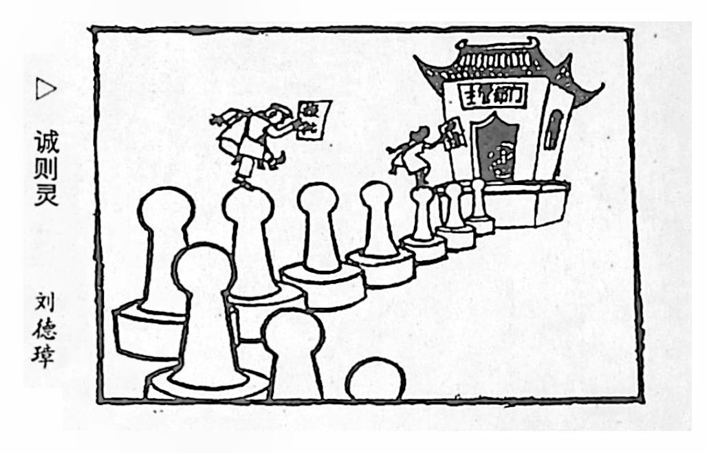

刘德璋 《人事》1988年第12期（总第39期），封三
诚则灵
Sincerity Brings Results
- Text in the drawing
- 主管部门 / 报批（？）
Supervising department / Submitted for approval (?) - Description
- Two petitioners clutching their papers hop from one giant official seal to the next, a long path of stepping stones leading up to a temple labeled “supervising department.”
- Note
- 诚则灵, “if you are sincere, the god will answer,” is said of temple offerings. Getting a project approved meant collecting stamp after stamp from one office after another.
- Artist
- Liu Dezhang 刘德璋
- Published in
- 《人事》1988年第12期（总第39期）, inside back cover
- Themes
- Paperwork and documents · Bureaucratism

Cite
Liu Dezhang, “诚则灵” [Sincerity Brings Results], Renshi (Personnel) 《人事》, 1988, no. 12, inside back cover.